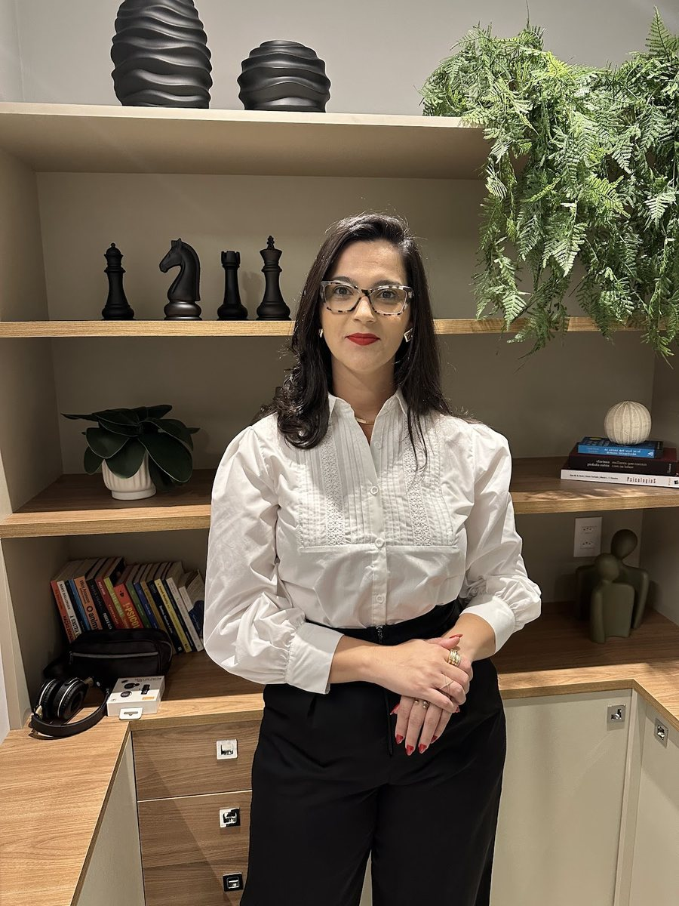
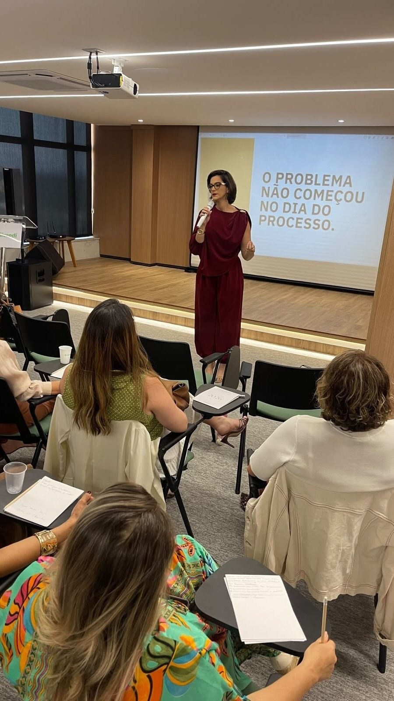
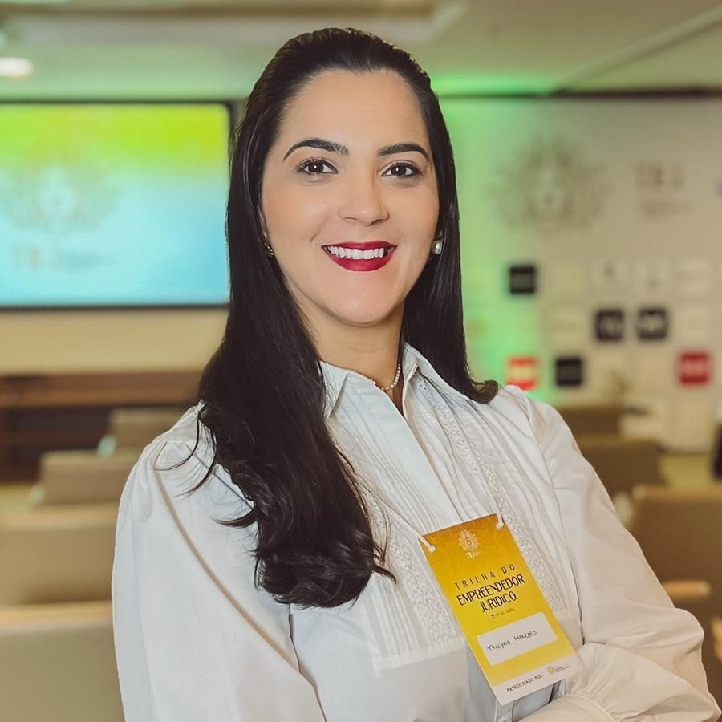

Advogada · OAB/BA 40.462 · Salvador
Dra. Tallyne Menezes
Advocacia para empresas·Contratos·Direito do consumidor·Direito cível
Assessoria jurídica para donos e donas de negócio, com atuação em contratos — inclusive imobiliários —, relações de consumo e questões cíveis. Escritório no Caminho das Árvores, em Salvador.
“O problema não começou no dia do processo.”Do telão da palestra Postura de Dona

Por onde começar
Qual é o assunto do seu negócio hoje?
Cada área tem uma página com informação geral para ler antes da conversa. A orientação concreta depende do seu caso.
Quero estruturar o jurídico do meu negócio
Prevenção, sociedade, políticas e o dia a dia com clientes e fornecedores.
Advocacia para empresas ContratosVou assinar, ou preciso redigir, um contrato
Prestação de serviços, fornecimento, parceria, compra e venda e locação.
Contratos ConsumidorTenho um problema numa compra, ou com um cliente
Os dois lados da relação de consumo, com os prazos gerais da lei.
Direito do consumidor CívelAlguém me deve, ou me cobra
Cobrança, reparação de danos, notificações e prazos.
Direito cívelAntes do processo
“O problema não começou no dia do processo.”
Telão da palestra Postura de Dona · ver o post
A frase estava no telão da palestra da Dra. Tallyne para empresárias. Quase todo conflito tem uma origem anterior: um contrato que não foi escrito, uma oferta mal explicada, um documento que ficou para depois. São seis movimentos que costumam evitar o problema — ou deixá-lo menor.
Combinado verbal vira dúvida quando a relação desanda. Objeto, prazo, pagamento, multa e saída precisam estar no papel.
Ler a páginaMovimento 02Atendimento ao consumidorOferta, informação clara, troca e prazo de resposta. Boa parte dos conflitos nasce no balcão ou no direct.
Ler a páginaMovimento 03Sociedade e documentosContrato social, acordo entre sócios e cadastros em ordem antes de crescer, contratar ou abrir outra unidade.
Ler a páginaMovimento 04Cobrança e recebíveisNota, contrato e comprovantes organizados fazem diferença quando é preciso cobrar — e os prazos para isso correm.
Ler a páginaMovimento 05Imóvel e locaçãoCompra, venda ou aluguel do ponto: matrícula, certidões e cláusulas lidas antes da assinatura.
Ler a páginaMovimento 06Revisão periódicaO negócio muda; os contratos e as políticas também precisam mudar. Revisar é mais simples que remediar.
Ler a páginaInformação jurídica geral. Cada caso é analisado individualmente.
A reunião de alinhamento
Como um atendimento costuma se organizar.
“POV: você está em uma reunião de alinhamento jurídico empresarial”, diz a legenda de um vídeo dela no Instagram (ver o vídeo). Antes de qualquer orientação, vem a conversa para entender o negócio. A ordem abaixo é geral; cada caso é analisado individualmente.
- 1Primeiro contato
Uma mensagem pelo WhatsApp com o assunto em poucas linhas: o que aconteceu, o que você precisa decidir e se há algum prazo correndo.
- 2Reunião de alinhamento
Uma conversa, presencial no Caminho das Árvores ou on-line, para entender o negócio, a situação e o que você espera.
- 3Leitura dos documentos
Contratos, notas, mensagens, notificações e cadastros são lidos antes de qualquer orientação.
- 4Orientação e caminhos
As alternativas possíveis — negociar, notificar, ajustar um contrato, ir à Justiça ou não fazer nada —, com riscos e custos de cada uma.
- 5Acompanhamento
Se houver trabalho a fazer, as etapas e a forma de contato são combinadas desde o início.


Para empreendedoras
Estratégia jurídica dita em voz alta.
A Dra. Tallyne leva o direito empresarial para conversas com donas de negócio: o Postura de Dona, sobre estratégias empresariais para mulheres empresárias, e o Café de Negócio, em Camaçari, na 2ª edição.
“Empreender não é sobre dar conta de tudo sozinha. É sobre saber liderar, delegar e construir uma estrutura que permita crescer sem carregar o negócio inteiro nas costas.”
Legenda dela no Instagram, sobre a palestra Postura de Dona · ver o post
Palestras e eventosTrajetória
Da UNEB ao próprio escritório.
Formada em 2012, com passagem por escritórios na área cível e de consumidor desde 2014 e escritório próprio desde 2018. Cada etapa traz a fonte.
- 2012Bacharelado em Direito
Universidade do Estado da Bahia (UNEB).
Fonte: LinkedIn - 2014Advocacia cível e do consumidor
Cerqueira e Castro, em Conceição da Feira (2014–2015).
Fonte: LinkedIn - 2015Figueirêdo Advogados e Consultores
De 2015 a 2017, na área cível e de consumidor.
Fonte: LinkedIn - 2017Sampaio e Ribeiro Advogados Associados
De 2017 a 2018, na mesma área.
Fonte: LinkedIn - 2018O próprio escritório
À frente do escritório de advocacia que leva o nome dela desde janeiro de 2018.
Fonte: LinkedIn - 2021Sociedade individual de advocacia
Tallyne Menezes I Sociedade Individual de Advocacia, aberta em 20/04/2021.
Fonte: Receita Federal

Na voz dela
A energia do dono.
“Todo negócio exige energia. Energia para começar, para sustentar, para inovar e, principalmente, para continuar quando os resultados ainda não apareceram. Mas existe uma energia que faz toda a diferença: a energia do dono.”
Legenda dela no Instagram · ver o post
“Ajudo empresários a protegerem seus negócios com estratégia, prevenção e segurança jurídica.”
Apresentação do Café de Negócio, publicada em parceria com ela · ver o post“Gestão Jurídica Preventiva | Redução de Passivos | Proteção Jurídica para o Varejo e Franquias | Contratos e Defesa do Consumidor”
Título do perfil dela no LinkedIn · ver o perfilConteúdos
O que ela publica.
Legendas, vídeos e perfis da Dra. Tallyne, com link para a publicação original.
Empreender não é sobre dar conta de tudo sozinha. É sobre saber liderar, delegar e construir uma estrutura […]Ver o postInstagram · legendaA energia do dono
Todo negócio exige energia. Energia para começar, para sustentar, para inovar […]Ver o postInstagram · vídeoReunião de alinhamento
POV: você está em uma reunião de alinhamento jurídico empresarialVer o vídeoInstagram · legendaPartir para cima
Sabe o que todas as mulheres de sucesso têm em comum? Elas partem para cima diante de qualquer situação.Ver o postInstagram · eventoCafé de Negócio — 2ª edição
Apresentada como advogada de empresas: “Ajudo empresários a protegerem seus negócios com estratégia, prevenção e segurança jurídica.”Ver o postLinkedIn · perfilPrevenção, varejo e franquias
Gestão Jurídica Preventiva | Redução de Passivos | Proteção Jurídica para o Varejo e Franquias | Contratos e Defesa do ConsumidorVer o perfilLinktreeAdvogada de empresas
Cível, consumidor e contratos — e os canais oficiais dela reunidos num só endereço.Abrir o Linktree
O escritório
Caminho das Árvores, Salvador.
No Edifício Boulevard Side Empresarial, na Rua Ewerton Visco. Atendimento presencial ou on-line, com hora marcada. Veja o escritório.
Tallyne Menezes AdvocaciaRua Ewerton Visco, 290 · Edifício Boulevard Side Empresarial · sala 1901 · Caminho das Árvores · Salvador – BA · 41820-022
Atendimento com hora marcada
Horário informado na ficha do escritório no Google. O atendimento é com hora marcada — confirme dia e horário pelo WhatsApp antes de ir.
Dúvidas frequentes
Perguntas comuns
Onde fica o escritório?
No Edifício Boulevard Side Empresarial, Rua Ewerton Visco, 290, sala 1901, Caminho das Árvores, Salvador (CEP 41820-022). Veja o escritório e o mapa.
Como marcar uma conversa?
Pelo WhatsApp (71) 99100-7874. Conte o assunto em poucas linhas; o escritório combina dia, horário e se a reunião será presencial ou on-line.
Qual é o horário?
Segunda a sábado, das 8h às 18h, segundo a ficha do escritório no Google; domingo, fechado. O atendimento é com hora marcada — confirme pelo WhatsApp.
O escritório atende empresas e pessoas físicas?
O foco divulgado pela Dra. Tallyne é a advocacia para empresas — donos e donas de negócio —, com atuação também em contratos, direito do consumidor e direito cível.
Qual é o registro da Dra. Tallyne na OAB?
OAB/BA 40.462. Veja a trajetória e como conferir.
O site já responde à minha dúvida?
O site traz informação jurídica geral. A orientação depende dos documentos e dos fatos de cada situação; cada caso é analisado individualmente.
Fale com o escritório
Uma conversa de alinhamento, com hora marcada.
Edifício Boulevard Side Empresarial, sala 1901, Caminho das Árvores. Mensagens pelo WhatsApp (71) 99100-7874.